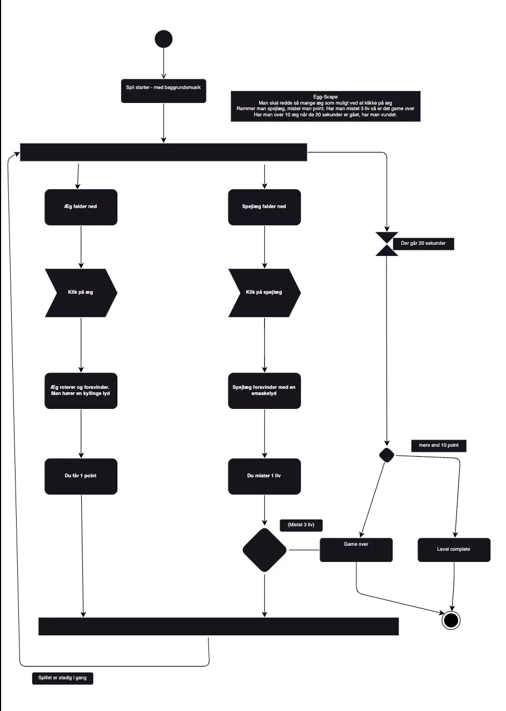
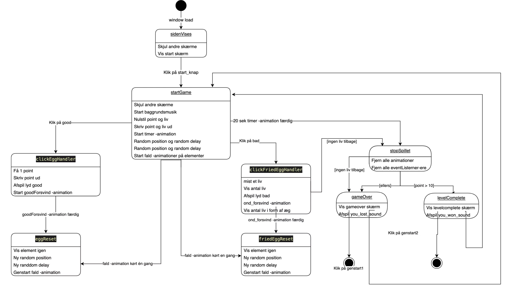

I tema 4 lærte vi omkring javascript sammen med css animationer. Her skulle vi designe alle elementer selv og kode spillet fra bunden. Javascript var helt nyt, og derfor skulle det være et helt simpelt spil vi skulle udvikle, nemlig et klikspil. Processen startede med papirsprototype, aktivitetsdiagrammer og senere statemachine diagram. Til at designe elementerne arbejdede vi med Adobe Illustrator. Animationssite
Jeg brugte "luk øjene" metoden til at finde på ideen til mit spil. Da jeg fik ordene bondegård og kylling, gik jeg straks igang med at begynde at udforme mit spil. Jeg fik ideen om at brugeren skulle hjælpe kyllingen med at beholde sine æg.
Et aktivitetsdiagram viser hvordan spillet skal forløbe. Helt fra start til slut. Hvad sker der når jeg klikker på den gode og den dårlige, hvornår spillet er vundet/tabt.
Et statemachinediagram viser mere hvordan ens javascript kode skal opbygges. Hvilke elementer skal tilføjes når en knap klikkes på og hvilke lyde der skal afspilles.
